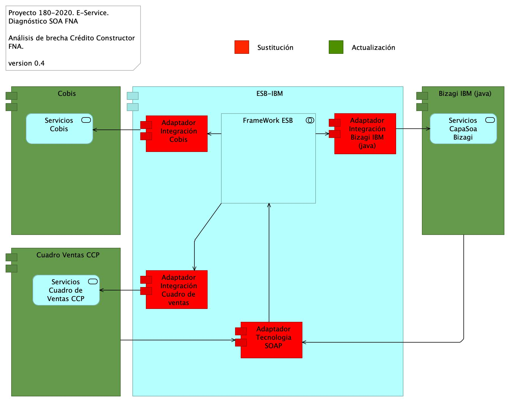
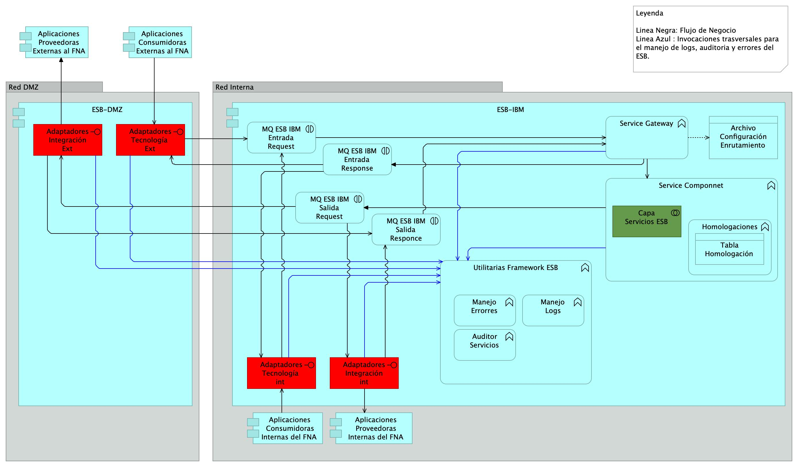
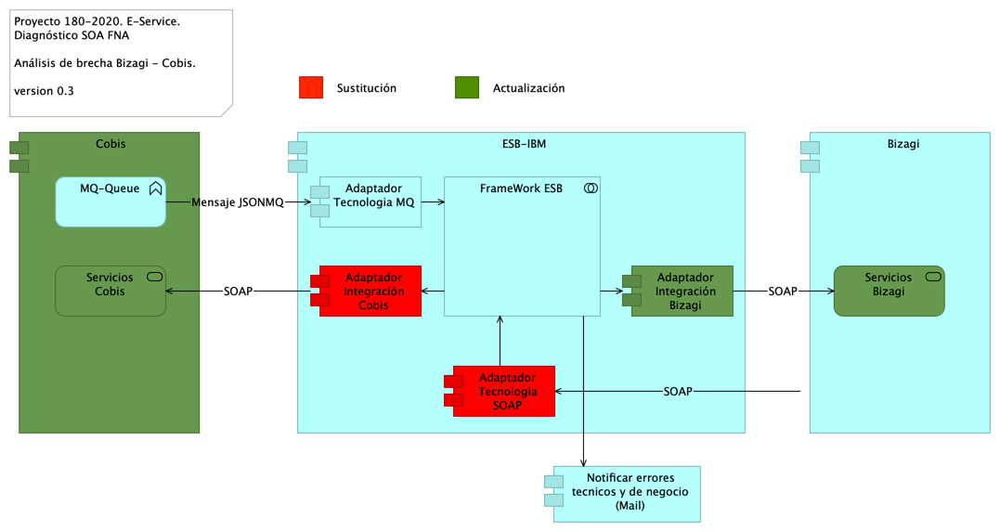
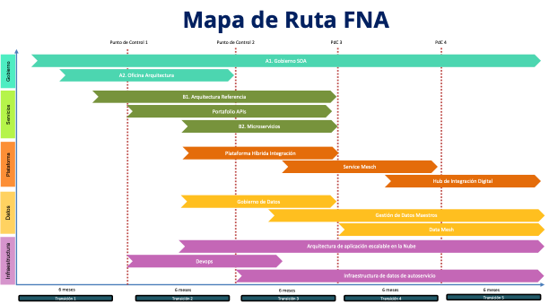
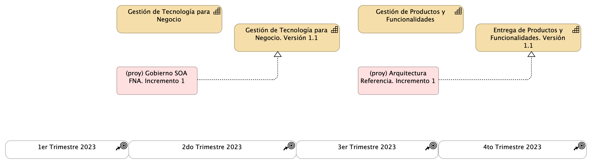
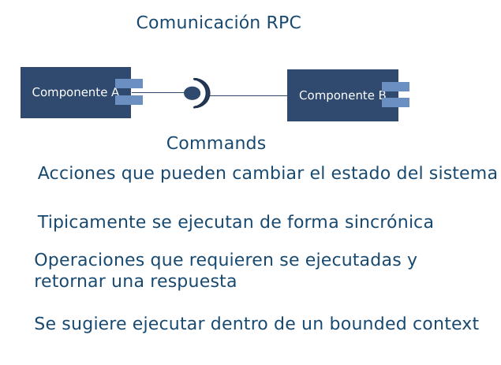
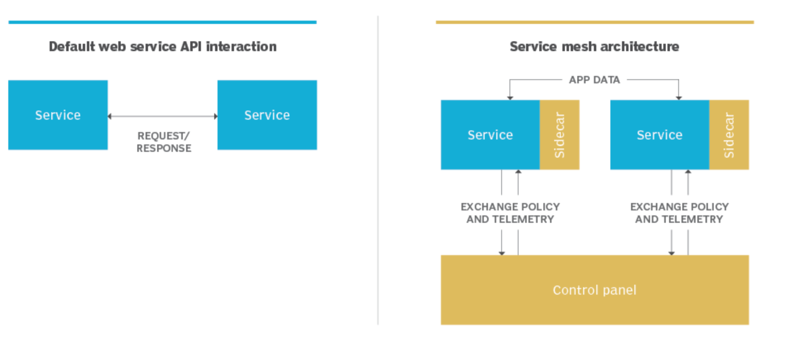
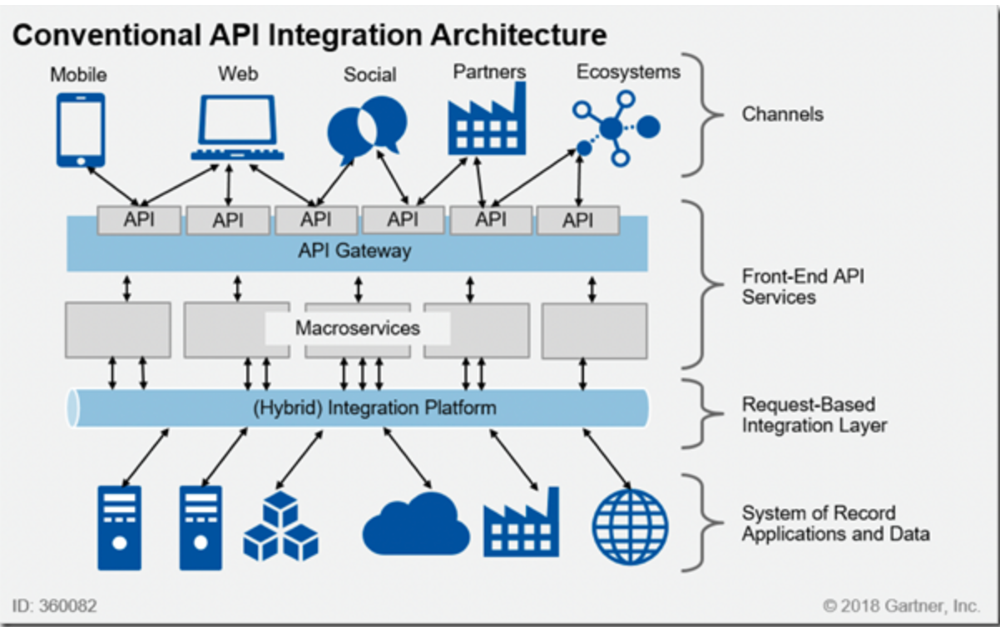
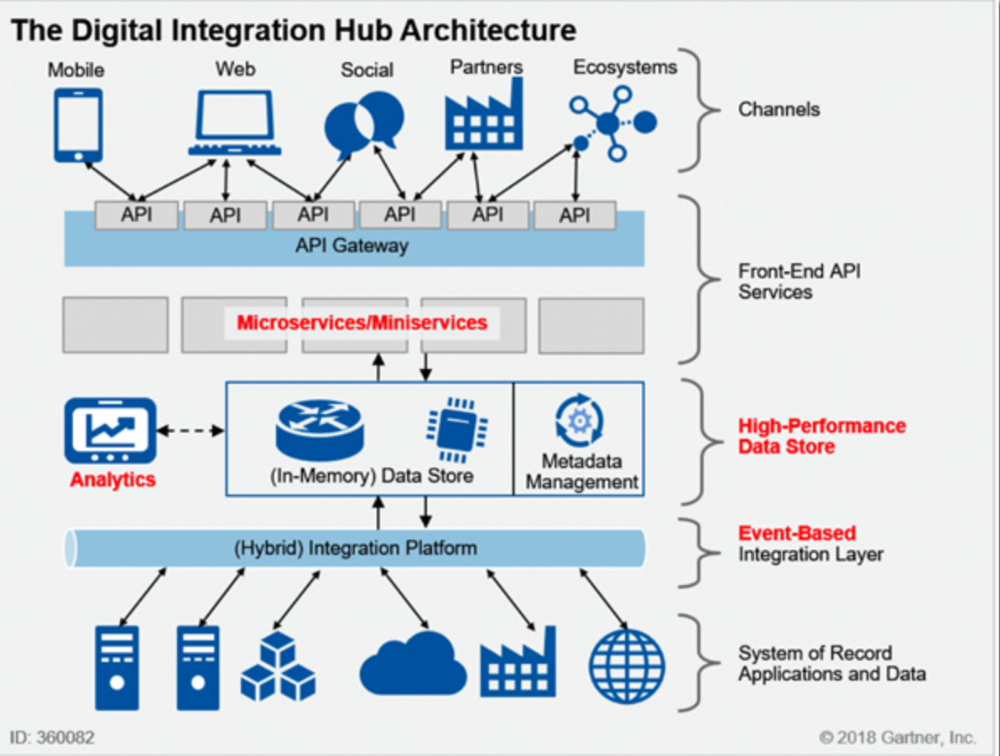

Documentación del proyecto 181-2020, E-Service,
(permalink)
versión indicada a continuación, se encuentra en
****
2bca8e1
de August 31, 2023.
Grupo E-Service
Harry Wong, ing.
· e_hwong
Arquitecto SOA, Stefanini
Eddie Hernandez, ing.
· e_ehernandez
Datos, Stefanini
Federico Suárez, ing.
· e_fsuarez
Infraestructura, Stefanini
Darío Correal, ing.
· e_dcorreal
Arquitecto TI, Stefanini
Fase 3: SOA Objetivo
Contenido de los Productos Contractuales, 181-2020
Producto 9: PR9. Portafolio de Inciativas y Brechas SOA Objetivo
La técnica del portafolio de brechas es utilizada en el desarrollo de este ejercicio de diagnóstico SOA del FNA para delinear los proyectos generadores de cambios aplicables a la situación actual SOA (Fase 1 del proyecto). El portafolio parte desde la arquittectura candidata desarrollada en la fase anterior e identifica los paquetes de trabajo (iniciativas, proyectos, reformas) que conducen al FNA a la arquitectura SOA candidata. La idea principal del análisis de brecha es resaltar los proyectos o ítems omitidos, o por definir, entre la situación actual SOA del FNA (fase 1 del diagnóstico) y la situación objetivo (fase 2). Incluso cuando esta última está todavía en evolución es posible avistar dichos cambios y proyectos. Lo anterior da origen al portafolio de iniciativas priorizadas, las mismas que al ser programas en el tiempo se convierte en la hoja de ruta SOA del FNA (producto 10 de esta fase), y cuya ejecución cerrará las brechas entre el estado inicial SOA y el objetivo.
Nota: los análisis de este producto están dirigidos a cumplir los objetivos del proyecto SOA: dependencia de proveedor (OBJ1), fortaleza SOA de las aplicaciones (OBJ2), y tiempo de mercado (OBJ3).
Justificación
Asegurar que la arquitectura SOA del Fondo apegada a la Vista de Segmento FNA soporte al procesamiento de información, a los sistemas de información, a las capacidades de negocio, y tecnologías requeridas para cumplir los objetivos de este ejercicio de diagnóstico SOA y que están diagramados en la arquitectura SOA candidata del FNA. Provee los paquetes de trabajo que garanticen (continuidad, orden e impacto) la realización de los cambios entre evoluciones de la arquitectura SOA del Fondo. Por último, el portafolio proporciona datos de entrada para los procesos de contratación y adjudicación futuros que el FNA considere para la implementación de los cambios.
Contenidos
Matriz de brechas de arquitectura SOA candidata del segmento FNA
Lista de iniciativas y proyectos (paquetes de trabajo) del segmento FNA: ítems por retener, rediseñar, actualizar, retirar
Análisis de impacto y dependencia entre los cambios en el segmento FNA
Ficha descriptiva de proyectos para el segmento FNA (justificación)
Criterios de Aceptación
Lista de cambios para el segmento FNA: ítems incluídos, por mejorar, nuevos y eliminados
Hoja de ruta preliminar hacia un objetivo de mejora
Tema
Portafolio de iniciativas y brechas: Método de análisis de brecha FNA
El método de análisis de brecha para el FNA está adaptado en cuanto a hacer foco en los resultados esperados de las brechas y en usar los resultados de las fases anteriores del presente ejercicio SOA (ver 04b.Resumen Fase 1). Este análisis de brecha busca dos onjetivos concretos.
Objetivos del Análisis de Brecha FNA
Este análisis busca dos objtivos concretos: encontrar brechas que reutilicen los activos de software y de TI del FNA. El segundo objetivo es encontrar los brechas que mejor conecten con las oportunidades y problemáticas encontradas en primeras dos fases de este diagnóstico SOA.
Reutilizar los activos de software y TI del FNA. Todos los activos de software y TI disponibles en el FNA deben ser equiparados, funcional y tecnológicamente, con los ajustes requeridos por la acrquitectura candidata versión 2.0 entregada por la fase 2 de este diagnóstico. Este objeitvo entrará a delinear las estrategias de implementación de las brechas (soluciones futuras) que se encuentren.
Brechas que conecten con las problemáticas y conocimiento previo. Este método parte de la selección de los ítems y conocimiento considerados relevantes, como problemáticas, riesgos y oportunidades, que fueron desarrolladas en las fases anteriores de este proyecto de diagnóstico SOA del FNA. Cada uno de estos contribuye a la identificación de brechas importantes para el Fondo. Por ejemplo, si partimos de uno de los objetivos de esta consultoría, el de flexibilidad, vamos a encontrar brechas que aporten a cumplirlo.
Entradas y Salidas del Método Análisis de Brecha FNA
En la siguiente imagen presentamos las entradas necesarias para garantizar tanto las salidas como los objetivos que este método se propone (descritos arriba).
Imagen 1. Entradas y salidas del método de análisis de brechas FNA. Relación de las fases anteriores con las expectativas y productos contractuales de esta última fase.
Fuente: elaboración propia.
Las entradas más importantes para la realización de este método son las arquitecturas de referencias actual y objetivo. Esto es, la arquitectura versión 1.0, analizada en la fase 1 de este diagnóstico, y la versión 2.0, elaborada por en la fase 2 de este proyecto de diagnóstico.
De las salidas de este método, la que más conecta con las expectativas es la matriz de brechas SOA por contexto, la cual es de importancia porque alimenta al portafolio de iniciativas y brechas (producto 9, PR9), que es finalmente el principal producto de esta última fase del presente proyecto. De la matriz de brechas se obtiene la lista de proyectos de cierre de brecha, la cual se complementa al agregarle a cada proyectos las estrategias de implementación. Estas dos salidas, la matriz de brechas y la lista de proyectos, las consideramos entre las más importantes que se desarrollanrán con la aplicación de este métrodo.
Pasos del Método de Anålisis de Brechas FNA
Este método inicia por la matrix de brechas, sea por dominio o perspectiva de arquitectura. La matriz presenta una comparación y las diferencias entre las arquitecturas SOA del FNA, versión 1 y 2 respectivamente desde un dominio o perspectiva particular, por ejemplo, negocio, aplicaciones, datos, Crédito, Cartera, flexibilidad, etc. Los ítems de esa perspectiva son contrastados entre ambas versiones para obtener elementos de cierre a los que llamaremos brechas.
El siguiente paso es hacer una lista de las iniciativas y proyectos de cierre de brechas y documentarlas en el repositorio SOA del FNA. Esta lista de cambios a la arquitectura es por un lado, una arquitectura de transición en sí misma, y es también una herramienta para agrupar y priorizar los impactos de cambios en el Fondo.
Este último es precisamente el tercer paso: agrupar y priorizar las brechas en tareas y proyectos.
En resumen, los pasos para la aplicación de este metodo son
1. Matriz de brechas por contexto. Escoja el contexto. Arquitectura actual en las filas, arquitectura objetivo en columnas.
1. (por cada brecha de la matriz) Listar los elementos del cambio.
1. (a cada proyecto de cierre de brecha) Agregar estrategia de implementación.
1. Agrupar y priorizar la lista de cambios (brechas, paso 2) en proyectos ejecutables.
Tema
Portafolio de iniciativas y brechas: Matriz de brechas de arquitectura SOA candidata del segmento FNA
Matriz de brechas de arquitectura SOA candidata del segmento FNA
Los análisis siguientes corresponden a la descripción de los elementos de cierre de brechas del FNA respecto al contexto de flexibilidad de negocio. Es decir, los cambios analizados abajo están asociados al contexto de flexibilidad de negocio, y por tanto, aportan a este, y por ende, a la empresa FNA. Dicho de otra manera, las brechas descritos a continuación son necesarios para mejorar la flexibilidad de negocio del segmento de empresa FNA objeto de este diagnóstico.
Análisis de Brecha Crédito Constructor. Contexto Flexibilidad de Negocio

Imagen 1. Partes de la arquitectura de Crédito Constructor impactados por el análisis de brecha en el contexto de flexibilidad de negocio.
Fuente: ae_fna_as_is.archimate.
Las partes impactadas por el análisis de brecha de la arquitectura de Crédito Constructor en el contexto de flexibilidad de negocio, y que por razón de este deben ser sustituidas por API indicadas en la arquitectura de SOA 2.0 del FNA son los indicados con actualización en la siguiente tabla.
nombre
tipo
brecha
ESB-IBM
application-component
Adaptador Integración Cobis
application-component
sustitución
FrameWork ESB
application-collaboration
Adaptador Tecnologia SOAP
application-component
sustitución
Adaptador Integración Bizagi IBM (java)
application-component
sustitución
Adaptador Integración Cuadro de ventas
application-component
sustitución
Cobis
application-component
actualizacion
Servicios Cobis
application-service
Cuadro Ventas CCP
application-component
actualizacion
Servicios Cuadro de Ventas CCP
application-service
Bizagi IBM (java)
application-component
actualizacion
Servicios CapaSoa Bizagi
application-service
Análisis de Brecha Bus de Datos Empresarial. Contexto Flexibilidad de Negocio
Siguiendo la misma intención de introducir las API (arquitectura candidata SOA, 2.0 del FNA) para aumentar la flexibilidad de negocio, esta vez, en el bus de datos de la empresa, este debe transicionar de adaptadores particulares a API estándares de nivel funcional. Nota: el cambio de adaptadores por API implica, y puede que con mayor profundidad, a los consumidores de estos adaptadores.

Imagen 1. Partes de la arquitectura del bus de datos del FNA (ESB IBM) impactados por el análisis de brecha en el contexto de flexibilidad de negocio.
Fuente: ae_fna_as_is.archimate.
Las partes impactadas por el análisis de brecha de la arquitectura del bus de datos del FNA (ESB IBM) en el contexto de flexibilidad de negocio, y que por razón de este deben ser intervenidas por API, las mimsas que son requeridas en la arquitectura SOA 2.0 del Fondo, son los indicados en la siguiente tabla, columna ‘brecha’.
nombre
tipo
brecha
ESB-IBM
application-component
MQ ESB IBM Entrada Request
application-interaction
Service Gateway
application-function
Adaptadores IntegraciÛn int
application-interface
sustitución
Archivo ConfiguraciÛn Enrutamiento
data-object
Service Componnet
application-function
Homologaciones
application-function
Tabla HomologaciÛn
data-object
Capa Servicios ESB
application-collaboration
actualización
Adaptadores TecnologÌa int
application-interface
sustitución
Utilitarias Framework ESB
application-function
Manejo Logs
application-function
Manejo Errorres
application-function
Auditor Servicios
application-function
MQ ESB IBM Salida Request
application-interaction
MQ ESB IBM Entrada Response
application-interaction
MQ ESB IBM Salida Responce
application-interaction
Aplicaciones Proveedoras Internas del FNA
application-component
Aplicaciones Consumidoras Internas del FNA
application-component
ESB-DMZ
application-component
Adaptadores IntegraciÛn Ext
application-interface
sustitución
Adaptadores TecnologÌa Ext
application-interface
sustitución
Aplicaciones Consumidoras Externas al FNA
application-component
Aplicaciones Proveedoras Externas al FNA (copy)
application-component
Análisis de Brecha Bizagi - Cobis. Contexto Flexibilidad de Negocio
La sustitución de adaptadores por API puede ser aplicada al caso de los procesos de negocio y la manera como estos se relacionan con los componentes subyacentes del ERP Cobis.

Imagen 1. Partes de la arquitectura de la plataforma de negocio FNA (BPMS Bizagi) impactados por el análisis de brecha en el contexto de flexibilidad de negocio.
Fuente: ae_fna_as_is.archimate.
Las partes impactadas por el análisis de brecha de la arquitectura del bus de datos del FNA (ESB IBM) en el contexto de flexibilidad de negocio, y que por razón de este deben ser intervenidas por API, las mimsas que son requeridas en la arquitectura SOA 2.0 del Fondo, son los indicados en la siguiente tabla, columna ‘brecha’.
nombre
tipo
brecha
Cobis
application-component
actualizacion
MQ-Queue
application-function
Servicios Cobis
application-service
actualización
Bizagi
application-component
Servicios Bizagi
application-service
actualización
ESB-IBM
application-component
Adaptador Tecnologia MQ
application-component
Adaptador Integración Cobis
application-component
sustitución
Adaptador Integración Bizagi
application-component
actualización
FrameWork ESB
application-collaboration
Adaptador Tecnologia SOAP
application-component
sustitución
Notificar errores tecnicos y de negocio (Mail)
application-component
Tema
Portafolio de iniciativas y brechas: Lista de iniciativas y proyectos SOA
Las iniciativas de transición, en este contexto, son paquetes de trabajo agrupados, que son a la vez proyectos ejecutables de cierre de brechas que realizan sustituciones, reajustes, o mejoras en un área de la arquitectura actual.
Las oportunidades dirigen a las iniciativas, las cuales buscan alcanzar dichas oportunidades mediante los proyectos de transformación que describiremos más adelante.
Oportunidades FNA. Puntos de mejora
OP1. Instaurar la figura de gobierno SOA, capacidad, proceso y recursos. El gobierno SOA para aumentar índices de independencia de proveedor del Fondo y relevancia de arquitectura. Utilizar herramientas, métodos y recursos (personas) para controlar lineamientos.
OP2. Mejorar proceso de diseño / construcción de soluciones SOA. Optimizar el proceso de construcción de soluciones SOA. Unificar el proceso de construcción y ofrecer un vocabulario común con el negocio.
OP3. Mejorar la oferta de servicios analíticos en segmento FNA. Habilitar la estrategia de inteligencia de negocios basado en la distribución de los datos. Soportar la estrategia de analítica del FNA (intel. artificial). Habilitar la generación de productos de datos analíticos como servicio.
OP4. Aumentar el nivel de utilización de la Tecnología SOA del FNA. Habilitar las facilidades de directorio y composición de servicios del ESB (IBM). Soportar la ejecución (rediseño) de los procesos de negocio FNA.
OP5. Servicios FNA guiados por arquitectura 2.0. Mejorar el tiempo de puesta en producción. Modernizar las soluciones SOA mediante gestión de tecnologías de arquitectura 2.0.
OP6. Gestión de la Tecnología (gobierno) orientada por arquitectura 2.0. Activar las herramientas de monitoreo de los servicios e índices de eficacia SOA.
OP7. Articulación y fortalecimiento del equipo de arquitectura del FNA junto a proveedores Institucionalizar oficina de arquitectura. Estructurar equipo de arquitecto SOA, aplicaciones, TI y datos
OP8. Monitoreo de los índices de eficacia de los servicios FNA. Mejorar indicadores de eficacia y madurez SOA: índices de cobertura, alineación y flexibilidad de negocio.
Prioridades de Aprovechamiento
Prioridad Alta
OP1. Gobierno SOA
OP7. Articulación y fortalecimiento del equipo de arquitectura
Prioridad Media - Alta
OP2. Diseño / construcción de soluciones SOA
OP5. Servicios FNA guiados por arquitectura versión 2.0
OP3. Oferta de servicios analíticos a la organización
Prioridad Media - Media
OP4. Aumentar la utilización de la Tecnología SOA
OP6. Gestión de tecnología (gobierno) orientada por arquitectura 2.0
OP8. Monitoreo de los índices de eficacia gobierno y diseño SOA
Prioridad Media - Baja
N/A
Prioridad Baja
N/A
Lista de Proyectos de Cierre de Brechas
Los siguientes proyectos, o paquetes de trabajo, son requeridos para cerrar las brechas de flexibilización de la arquitectura actual de Crédito Constructor del FNA. Estos proyectos de cambios provienen del análisis del brecha descrito en 09b. Matriz de brechas.
Crédito Constructor FNA
Proyectos de cierre de brecha Crédito Constructor FNA.
id
Proyecto
Objetivo
Tipo
Impl.
BR01
API Crédito Constructor
Actualizar las interfaces de ejecución y exposición de funcionalidades
incremental
actualizacion
BR02
Estandarización de Integración
Disminuir los adaptadores particulares. Reemplazarlos por llamadas a API
regresivo
sustitución
Impl.: estrategia de implementación
El tipo de proyeto indica el riesgo técnico que causará en la operación de la solución, en este caso, Crédito Constructor. Las estrategias de implementación indican el tipo de trabajo que debe realizarse para minimizar el impacto que el proyecto causará en el este segmento de la empresa del FNA.
Bus de Datos Empresarial FNA
Los siguientes proyectos (paquetes de trabajo) son requeridos para cerrar brechas en pro de la flexibilización de negocio, y por tanto, de la arquitectura actual del bus de datos ESB IBM del FNA. Estos proyectos de cambios provienen del análisis del brecha descrito en 09b. Matriz de brechas.
Proyectos de cierre de brecha ESB IBM del FNA.
id
Proyecto
Objetivo
Tipo
Impl.
Depend
BR010
Estandarización de Integración ESB FNA
Disminuir los adaptadores particulares. Reemplazarlos por exposición (y gestión) de API
regresivo
sustitución
BR02
BR011
Servicios de negocio y recomposición
Agregar servicios de negocio a la capa de negocio del ESB. Rediseño de las composiciones de servicios que reflejen el flujo de las transacciones de negocio
incremental
actualizacion
BR02
Impl.: estrategia de implementación.
Depend: el proyecto actual puede iniciar (o no) según el desempeño de los proyectos en relación de dependencia con este.
El tipo de proyeto indica el riesgo técnico que causará en la operación de la solución. Para el caso particular del ESB FNA, el proyecto BR10, Estandarización de Integración, extiende los cambios hasta los consumidores de los antes adaptadores. Las estrategias de implementación indican el tipo de trabajo que debe realizarse para minimizar el impacto que el proyecto causará en el este segmento de la empresa del FNA.
Procesos de Negocio Bizagi - Cobis FNA
Proyectos de cierre de brecha de la plataforma de procesos de negocio, Bizagi - Cobis.
id
Proyecto
Objetivo
Tipo
Impl.
Depend
BR020
Estandarización de Integración ESB FNA
Disminuir los adaptadores particulares. Reemplazarlos por exposición (y gestión) de API
regresivo
sustitución
BR10
BR021
Servicios de negocio y recomposición
Agregar servicios de negocio de soporte a los procesos de negocio Bizagi FNA. Rediseño de las composiciones de servicios que reflejen el flujo de las transacciones de negocio
incremental
actualizacion
BR10
Tema
Portafolio de iniciativas y brechas: Ficha descriptiva de proyectos para el segmento FNA
Actualizar las interfaces de ejecución y exposición de funcionalidades (API) de Crédito Constructor.
Oportunidades / Retos
Convertir al producto Crédito Constructor en funcionalidades granulares, reutilizables y expuestas (privadas, protegidas y públicas)
Comercializar el API de C. Constructor
Estandarizar el modelo de integración e intercambio de datos
Alcance
Estructurar e implementar funcionalidades del producto en forma de operaciones y datos expuestos (API)
Establecer los nuevos consumidores de las API del producto
Actualizar y modificar a los consumidores actuales (redirección)
Impacto / Beneficio
Proteger de impacto por cambios a los consumidores y ambos extremos de la integración
Flexibilidad de modificación de las integraciones
Modernización del modelo y tecnología de integración
Actores
Unidades de negocio
Oficina de Arquitectura
Proveedores del FNA (Cobis, IBM, Oracle)
Consultores / fabricantes de apoyo
Tecnologias
Portafolio de API
Herramientas de diseño de API
Hub de Integración Digital
Objetivo
Proveer una plataforma de datos de alta velocidad que intermedie entre el API Gateway y la Plataforma híbrida de Integración
Oportunidades / Retos
Desacoplamiento de sistemas de información
Consulta de información con baja latencia
Alimentación a la zona de analítica
Actores
Encargados de infraestructura y operaciones
Oficina de arquitectura
Consultores de soporte
Impacto / Beneficio
Soporte a esquemas híbridos de despliegue (on-premises y cloud)
Implementación de prácticas DevOps como despliegue continuo e integración continua
Mayor acceso y velocidad a los datos operativos y analíticos de la organización
Alcance
Arquitectura de integración
Integración con el API Gateway y la plataforma híbrida de integración
Integración en un proceso misional
Tecnología
Hub de Integración Digital
Data Mesh
Objetivo
Implementar una estrategia de datos que permita al FNA gestionar sus datos como un activo y aumentar el valor que obtiene de sus datos mediante la identificación de oportunidades para el uso de datos, reducción de costos y mitigación de riesgos
Oportunidades / Retos
Traducir las necesidades del negocio en requerimientos de datos y de sistemas para que los procesos tengan de manera consistente los datos que requieren
Preparar estratégicamente al FNA es para evolucionar productos, servicios y datos para aprovechar las oportunidades comerciales inherentes a las tecnologías emergentes
Actores
Oficina de Arquitectura FNA
Consultores de apoyo
Arquitecto de Datos
Impacto / Beneficio
Facilitar la alineación entre el negocio y TI
Diseños de estructuras y planes que cumplan con los requerimientos de datos actuales y a largo plazo para el FNA
Usar la Arquitectura de Datos para establecer la semántica de una empresa, a través de un vocabulario común del negocio
#### Alcance
Producir las versiones iniciales de los artefactos de Arquitectura de Datos, como el modelo de datos empresarial, el mapa de flujo de datos y mapas de ruta de toda la empresa
Alinear la Arquitectura de Datos con la estrategia empresarial y la arquitectura de negocio
Definir un modelo canónico de datos basado en un modelo unificado de datos y que permita incrementalmente la implementación de un Data Mesh
Tecnología
Herramientas de modelado de datos
Herramientas que provea servicios de implementación de Data Mesh (Ingesta, almacenamiento, explotación)
Repositorio de Arquitectura
Gobierno de Datos
Objetivo
Implementar la estrategia de gobierno de datos que permita tener autoridad y control sobre la gestión de los activos de datos del FNA
Oportunidades / Retos
Habilitar un FNA que gestione los datos como un activo
Definir, aprobar, comunicar e implementar principios, políticas, métricas, herramientas y responsabilidades para la gestión de los datos
Monitorear, mantener y guiar el cumplimiento de la políticas sobre la gestión y uso de datos
Actores
Comité de gobierno del FNA
Oficina de arquitectura FNA - Oficina de gobierno de datos
Especialista en Gobierno de Datos
Impacto / Beneficio
Cumplimiento regulatorio
Eficiencia en proyectos de desarrollo y productos de datos
Gestión de proveedores
Alcance
Definir el gobierno de datos para el FNA
Definir e implementar la estrategía de datos para el FNA
Alinear el gobierno de datos con el gobierno SOA
Tecnología
Herramienta de gobierno de datos
Tablero de control de gobierno de datos
Gestión de Datos Maestros
Objetivo
Implementar una estrategia de gestión de datos compartidos para conocer objetivos organizacionales reduciendo la redundancia de los datos y los costos de integración de los datos
Oportunidades / Retos
Gestionar los datos compartidos de forma eficiente
Proporcionar una fuente autorizada de datos maestros y de referencia conciliados y evaluados con calidad
Cumplir con los requisitos de datos en el FNA
Actores
Unidades de Negocio
Oficina de arquitectura FNA
Consultores de Apoyo
Impacto / Beneficio
Reducir los riesgos asociados con la redundancia de datos, asegurando alta calidad, y reduciendo costos de integración de datos
Habilitar y compartir activos de información transversalmente en los dominios de negocio y aplicaciones en la organización
Desarrollar una versión confiable de la verdad para cada instancia de entidad conceptual como producto, lugar, cuenta, persona u organización
Alcance
Identificar múltiples instancias de la misma entidad representada dentro y entre fuentes de datos; construir y mantener identificadores y referencias cruzadas para permitir la integración de la información
Implementación de una herramienta de Master Data Management (MDM)
Integración de datos a través de estándares, modelos de datos comunes y patrones de integración
Tecnología
Herramienta de Master Data Management MDM
Tablero de control de datos maestros
Devops
Objetivo
La adopción de la cultura y prácticas de Development Operations (DevOps) permite a la organización crear y entregar productos de software de forma más rápida y fiable
Oportunidades / Retos
El aprovisionamiento y la administración de la infraestructura: Los diversos ambientes de infraestructura (Ej. desarrollo, calidad, pre-producción y producción) podrían ser administrados a través de infraestructura como código
Implementación del código de la aplicación: El ciclo de vida de los componentes incluyendo la promoción en los distintos ambientes se gestiona a través de “pipelines”(o canalizaciones)
Actores
Encargados de infraestructura y operaciones
Oficina de arquitectura
Consultores / fabricantes de apoyo
Impacto / Beneficio
Software de mayor calidad
Escalabilidad de las Aplicaciones
Velocidad en el Proceso de Desarrollo de Software
Alcance
Determinar los elementos que son susceptibles de transformar o que pueden hacer uso de Infraestructura cómo código
Implementación de una herramienta de “Servidor de Automatización”
Iniciar con prácticas de ‘Integración Continua’ y gradualmente apuntar a contar con ‘Despliegue Continuo’
Tecnología
Servidor de Automatización
Repositorio de Código fuente
Kubernetes
Arquitectura de aplicación escalable en la Nube
Objetivo
Alcanzar mejores niveles de eficiencia operativa, mayor escalabilidad y rendimiento mejorado
Oportunidades / Retos
Adopción de un enfoque de microservicios
Orquestación de contenedores
Uso de servicios administrados (PaaS)
Actores
Encargados de infraestructura y operaciones
Oficina de arquitectura
Consultores / fabricantes de apoyo
Impacto / Beneficio
Permitir capacidad de cómputo particular según sea requerido para soportar la carga. Este enfoque permite aprovechar de mejor forma la elasticidad que ofrece la nube.
Automatizar tareas como parches, aprovisionamiento de nodos y actualizaciones. Gestión dinámica con base a la demanda.
Evitar tareas administrativas, como el aprovisionamiento de hardware, parches de software, configuración, ajustes, recuperación de fallos y respaldos de seguridad
Alcance
Determinar los elementos que son susceptibles de transformar o que pueden hacer uso de microservicios
Identificar los servicios o componentes que pueden implementarse como ‘servicios administrados’
Integrar esta arquitectura dentro del enfoque DevOps
Tecnología
Servicios Administrados
Integración de sistemas
Kubernetes
Infraestructura de datos de autoservicio
Objetivo
Soportar a nivel técnico la iniciativa de ‘Data Mesh’
Oportunidades / Retos
Gestión de la seguridad
Integración con sistemas existentes
Plataformas de datos en la nube / Escalabilidad
Actores
Encargados de infraestructura y operaciones
Oficina de arquitectura / Arquitecto de datos
Consultores / fabricantes de apoyo
Impacto / Beneficio
El área de IT solo está involucrada en aspectos técnicos y soportar la evolución con base en el mapa de ruta de “Data mesh” y cada equipo de dominio.
Cambio cultural para operar y monitorear este tipo de tecnología.
El autoservicio conlleva la capacidad de proporcionar y asignar los recursos de hardware y aplicaciones de la plataforma de datos a petición de los dominios de datos.
Alcance
Selección de herramientas y tecnologías con base en las iniciativas y proveedores con los que cuente la organización
Establecer políticas y procedimientos adecuados para garantizar que los datos estén protegidos y sean de alta calidad
Monitorear adecuadamente el gasto (Modelo de operación FinOps)
Tecnología
Servicios Administrados
Integración de sistemas
Microservicios
BR010. Estandarización de Integración ESB FNA
Objetivo
Actualizar las interfaces de integración y comunicación entre servicios gestionados por el bus de datos empresarial ESB IBM FNA.
Oportunidades / Retos
Incluir formas de integración más flexibles y cercanas a lo funcional vía API, granulares, reutilizables y mediadas por niveles de exposición (privadas, protegidas y públicas)
Migrar la integración entre aplicaciones hacia la exposición de funcionalidades independientes de la aplicación (API)
Estandarizar el modelo de integración e intercambio de datos
Alcance
Estructurar e implementar funcionalidades del producto en forma de operaciones y datos expuestos (API)
Establecer los nuevos consumidores de las API del producto
Actualizar y modificar a los consumidores actuales (redirección)
Impacto / Beneficio
Proteger de impacto por cambios en C. Constructor a los consumidores y aplicaciones clientes del producto
Flexibilidad de modificación de las funcionalidades principales de C. Constructor
Aumentar el nivel de capacidades y tecnologías del ESB
Actores
Unidades de negocio
Oficina de Arquitectura
Proveedores del FNA (Cobis, IBM, Oracle)
Consultores / fabricantes de apoyo
Tecnologias
Portafolio de API
Herramientas de diseño de API
A1. Gobierno SOA
Objetivo
Vigilar las relaciones entre las áreas de negocio (la vicepresidencia de operaciones y la vicepresidencia de crédito del FNA) y la implementación y diseño de soluciones SOA. El gobierno SOA del Fondo debe asistir en la aplicación y ejecución de un estándar de implementación, observación y puesta en marcha de soluciones SOA.
Oportunidades / Retos
Fortalecer el comité de gobierno SOA del FNA
Generar lineamientos y políticas de gobierno SOA
Promover la institucionalización de la arquitectura de referencia y del proceso de desarrollo de las soluciones SOA
Actores
Comité de gobierno del FNA
Oficina de arquitectura FNA
Comité asesor
Impacto / Beneficio
Lineamientos claros, libres de ambigüedad que permitan guiar la evolución de la arquitectura SOA 2.0 en la organización
Fuente única de planeación estratégica y control de la operación SOA
Vigilancia del cumplimiento de los niveles de servicio de las soluciones SOA
Alcance
Crear e institucionalizar el comité de gobierno SOA del FNA
Definir los roles y responsabilidades para la instalación del comité
Elaborar los lineamientos, políticas y procesos de gobierno SOA del FNA
Medir las decisiones de gobierno sobre la arquitectura y el proceso de desarrollo de soluciones SOA
Tecnología
Depósito centralizado SOA
Depósito documental
Oficina de arquitectura
Objetivo
Equipo de trabajo, conforme al gobierno SOA, a cargo de los roles de gestión de la tecnología y arquitectura en los ámbitos específicos de diseño de servicios SOA y componentes de software, infraestructura tecnológica y redes, aplicaciones y herramientas de software, y especialista estructuras de datos e información negocio. Rol general: gestión de conocimiento de la arquitectura de referencia.
Oportunidades / Retos
Institucionalizar el rol y los deberes y responsabilidad del grupo de arquitectura
Hacer una gestión cada vez más efectiva del conocimiento en arquitectura del FNA
Actores
Dirección TI
Unidades de negocio
Consultores de soporte
Impacto / Beneficio
Gestionar el conocimiento en arquitectura del FNA
Proveer enlace directo con los consultores en arquitectura
Gobernar la arquitectura de referencia de la organización
Dar garantía de la alineación de las soluciones con áreas de negocio
Alcance
Definición de funciones y roles de los miembros de la oficina
Definir procesos y niveles de servicio de la oficina
Dar lanzamiento a la oficina
Tecnología
Arquitectura de referencia
Depósito de Arquitectura
Arquitectura de referencia SOA 2.0
Objetivo
Evolucionar el desarrollo de los servicios SOA del FNA hacia diseños y tecnologías determinadas en la arquitectura de referencia 2.0 (como microservicios, REST, API, infraestructura Nube, …) y favorecer la adopción de un estilo de arquitectura orientado a eventos.
Oportunidades / Retos
Acelerar el desarrollo de las arquitecturas de solución
Unificar el vocabulario con las áreas de negocio y TI
Proveer soporte a los lineamientos y políticas de gobierno SOA/TI del Fondo
Actores
Áreas de negocio críticas
Oficina de arquitectura FNA
Consultores y equipo de apoyo
Impacto / Beneficio
Reducción en tiempos y costos asociados a las soluciones SOA
Mejora en la alineación entre negocio y TI
Mitigación de rotación del equipo de arquitectura
Visión global de soluciones de TI vs. requisitos del negocio
Alcance
Diseño unificado de vistas funcional, despliegue, información, integración y tecnología
Modelado en lenguaje y herramienta de diseño del FNA
Crear y administrar las transiciones hacia la arquitectura versión 2.0
Utilización del depósito de arquitectura institucional
Crear inventario de artefactos modelo-serie de aceleración de implementación
Tecnología
Depósito´de Arquitectura
Herramientas de modelado
Microservicios
Objetivo
Promover el uso de microservicios como estilo de arquitectura para ser integrado con la estrategia SOA existente en el FNA
Oportunidades / Retos
Proponer esquemas de arquitectura desacopladas
Actualizar el portafolio de servicios con tecnologías actuales mediante un estilo de arquitectura orientada a microservicios
Agilidad en el desarrollo de soluciones
Actores
Oficina de arquitectura
Desarrollo / operaciones
Consultores SOA
Impacto / Beneficio
Actualización tecnológica
Disminución en los costos y tiempos asociados al desarrollo de soluciones SOA
Modernización y utilización de los mecanismos de integración de servicios
Alcance
Revisión del proceso de desarrollo de software del FNA
Apropiación de técnicas de desarrollo ágil - DevOps
Metodologías de análisis, diseño e implementación orientadas a microservicios
Adecuación de la infraestructura para soportar los flujos de despliegue continuo / integración continua y desarrollo de Microservicios
Tecnología
Herramientas de desarrollo
Herramientas de despliegue continuo / IC
Tecnologías cloud
Portafolio de API
Objetivo
Establecer un portafolio institucional de funcionalidades, recursos y datos expuestos en API, que sirva como fuente única de la verdad sobre las versiones, tecnologías y características de todas las API de la organización
Oportunidades / Retos
Gestión y estructuración del portafolio de API del FNA
Definición de los contratos de las API, las tecnologías y los atributos de calidad de las API de la organización
Actores
Unidades de negocio
Oficina de Arquitectura
Proveedores del FNA (Cobis, IBM, Oracle)
Consultores / fabricantes de apoyo
Impacto / Beneficio
Mejorar el gobierno y las estrategias de evolución y mantenimiento de las API del FNA
Mayor control en el diseño, desarrollo y operación de las API
Punto único de búsqueda y localización de API y servicios en la organización
Alcance
Estructuración del portafolio, en API privadas, públicas y consorcio
Diseño de la estructura y organización de las API de la organización
Definición de lineamientos y políticas de uso de las API
Tecnologías e infraestructura requeridas para el desarrollo, pruebas y operación de las diferentes API
Tecnología
Portafolio de API
Herramientas de diseño de API
Service Mesh
Objetivo
Mejorar de la comunicación, estabilidad (reintento y tolerancia a fallos) y la disponibilidad de servicios SOA y microservicios del Fondo mediante el uso de proxys.
Oportunidades / Retos
Modernizar los mecanismos de orquestación de servicios
Proponer alternativas para el manejo de escalabilidad, seguridad y monitoreo de servicios
Proponer esquemas de operación de servicios orientados a la nube
Actores
Oficina de Arquitectura FNA
Consultores de Apoyo
Impacto / Beneficio
Apoyo a la estrategia de transición hacia microservicios
Mayor control y monitoreo de los microservicios
Posibilidad de un despliegue multi-cloud de los microservicios
Mejorar mecanismos de comunicación y control de los micro servicios
Alcance
Diseño de arquitectura
Instalación de una herramienta que implemente el patrón service-mesh (Control Plan – Data plane)
Prueba piloto inicial con un subconjunto de servicios
Extensión de la prueba piloto a un proceso de misión crítica
Tecnología
Implementación service Mesh: Istio, Amazon App Mesh, Meshery
Kubernetes
Docker
Plataforma Híbrida de Integración
Objetivo
Establecer un esquema de integración orientado a mensajes integrado con mecanismos de integración síncronos
Oportunidades / Retos
Potencializar el uso de la tecnología de integración instalada (ESB y Mensajería)
Modernizar los esquemas de integración de la organización con esquemas híbridos (síncronos y asíncronos)
Propender por arquitecturas orientadas a eventos
Actores
Encargados de infraestructura y operaciones
Oficina Arquitectura de FNA
Consultores de apoyo
Impacto / Beneficio
Disminución de la complejidad asociada a la orquestación de servicios
Desacoplamiento de las soluciones y servicios del ecosistema de servicios de la organización
Menor dependencia del bus de servicios
Alcance
Diseño de arquitectura
Prueba piloto con orquestación y coreografía
Extensión de la prueba a un proceso misional
Tecnología
ESB
Plataforma de Mensajería
Fase 3: SOA Objetivo
Contenido de los Productos Contractuales, 181-2020
Producto 10: PR10. Hoja de Ruta SOA
La hoja de ruta SOA (o el plan de migración) es la programación en el tiempo de un rumbo viable de cambios (migración) en la arquitectura SOA actual del FNA con la intención de moverla de un estado a otro. Plantea el despliegue en el tiempo de la ejecución de las capacidades y proyectos de migración (rollout) de la arquitectura SOA actual del FNA que resulten en la arquitectura SOA candidata con arreglo al portafolio de iniciativas y proyectos (producto 9) del presente diagnóstico. La hoja de ruta plantea además un programa de los estadios intermedios requeridos, y sus controles, para llegar a la arquitectura SOA objetivo coordinado con la oficina de proyectos del FNA para asegurar
Nota: los análisis de este producto están dirigidos a cumplir los objetivos del proyecto SOA: dependencia de proveedor (OBJ1), fortaleza SOA de las aplicaciones (OBJ2), y tiempo de mercado (OBJ3).
Justificación
Procura la articulación y gestión de dependencias de las iniciativas SOA del portafolio de la arquitectura SOA (producto 9 de este diagnóstico) con otros proyectos del FNA, a fin de economizar recursos o evitar colisiones. Asegura a la gerencia de tecnología del FNA los criterios para la vigilancia y los puntos de control y revisión de las migraciones transitorias y estables con el propósito de que los equipos implementen los proyectos conforme a los diseños. En términos generales, este producto es el responsable de organizar la transformación de la arquitetura en implementación.
Contenidos
Hoja de ruta de los proyectos de cambio
Estimaciones y análisis de impacto y dependencia entre los cambios en el segmento de la empresa
Consideraciones para la ejecución de los primeros cambios
Puntos de control en la ejecución de la hoja de ruta SOA
Criterios de Aceptación
Lista de cambios para el segmento FNA: ítems incluídos, por mejorar, nuevos y eliminados
Hoja de ruta preliminar hacia un objetivo de mejora
Tema
Portafolio de iniciativas y brechas: Hoja de ruta de los proyectos de cambio
Hoja de Ruta E-Service FNA de los Proyectos de Cambio

Imagen 1. Proyectos de cierre de brecha FNA. Prioridades, dependencias, secuencia, puntos de control de la evolución de la arquitectura de referencia SOA 2.0 del Fondo.
Fuente: elaboración propia.
Asunto
La ejecución de la hoja de ruta E-Service (diagnóstico SOA) plantea la implementación de los proyectos de cierre de brechas que impacten a los problemas diagnosticados en dicho proyecto. Estos son: a la flexibilidad de negocio, al fortalecimiento de construcción y diseño de servicios, y a la independencia de proveedor, en el ámbito de las vicepresidencias de Crédito y de Operación, en el período de ejecución 2023.
Como resultado del inicio de la ejecución de la hoja de ruta el Fondo Nacional del Ahorro (FNA) procura 1) aumentar las capacidades de desarrollo de soluciones y requerimientos, y 2) modernizar y aumentar la capacidad del uso tecnológico de estas soluciones.
Puntualmente, la implementación (todos los proyectos) de la hoja de ruta, tal como está diagnosticada por E-Service, buscan los objetivos de:
• Flexibilidad y tiempo de mercado (OBJ3)
• Fortaleza SOA de las aplicaciones (OBJ2)
• Independencia de proveedor (OBJ1)
Para lo cual, la hoja de ruta E-Service está orientada a impactar los siguientes brechas y oportunidades:
• OP1. Instaurar la figura de gobierno SOA, capacidad, proceso y recursos
• OP2. Mejorar proceso de diseño, construcción y DevOps de soluciones SOA
• OP3. Mejorar la oferta de servicios analíticos en segmento FNA
• OP4. Aumentar el nivel de utilización de la Tecnología SOA del FNA
• OP5. Desarrollo de Servicios FNA guiada por la arquitectura de referencia 2.0
• OP6. Gestión de la Tecnología (gobierno) orientada por arquitectura 2.0
• OP7. Articulación y fortalecimiento del equipo de arquitectura del FNA junto a proveedores
• OP8. Monitoreo de los índices de eficacia de los servicios FNA
Alcance
Para el período 2023, la implementación de la hoja de ruta E-Service impactará los objetivos de Flexibilidad (OBJ3) y Fortalecimiento (OBJ2), mediante el incremento de las capacidades del FNA de diseño e implementación de soluciones de negocio (ver todas las capacidades FNA, diagnóstico E-Service, fase 1), en el dominio de aplicaciones y servicios solamente.
Las capacidades impactadas en el alcance del proyecto hoja de ruta E-Service, período 2023, para el dominio de aplicaciones y servicios
• CAP1. Capacidad de gestión de tecnología
• CAP2. Entrega de productos y funcionalidades.
El incremento de las capacidades de gestión de tecnología (TI), y la de entrega de productos y funcionalidades, incluidas en el alcance del período 2023, se realizará mediante la ejecución de los proyectos aquí indicados:
1. (proy. cierre brecha) PRY01. Gobierno SOA FNA --Incremento 1: dominio de aplicaciones y servicios únicamente
2. (proy. cierre brecha) Arquitectura Referencia --Incremento 1: dominio de aplicaciones y servicios únicamente
El alcance del proyecto de ejecución de la hoja de ruta, período 2023, es el ilustrado en la imagen siguente.

Imagen 1. Vista de evolución de capacidades dentro del alcance del proyecto hoja de ruta E-Service, período 2023, dominio de aplicaciones y servicios. Capacidades incrementadas para impactar a los objetivos Flexibilidad (OBJ3) y Fortalecimiento (OBJ2).
Por consecuencia de estos los proyectos PRY01 y PRY02 de la hoja de ruta, en el período 2023, y del consiguiente incremento en las capacidades del FNA incluidas en este alcance, la arquitectura SOA del Fondo evolucionará a su vez en dos versiones nuevas, como sigue
Imagen 2. Vista de evolución de arquitectura de referencia FNA a razón del las capacidades incrementadas.
Componentes modificados
Los aumentos de versión de la arquitectura SOA del FNA implica que ítems de trabajo, componentes de software, aplicaciones, tecnologías o recursos de capital humano deban ser modificados (aumentado de versión).
Con propósito únicamente ilustrativo de los ítems que pueden ser sujetos de variante (especialización) por concepto de los incrementos de la arquitectura del FNA, dominio de aplicaciones y servicios únicamente, bajo las condiciones de tiempo y recursos del proyecto de implemenatción de hoja de ruta E-Service, período 2023, presentamos a continuación una lista de aplicaciones de software que pueden llegar a cambiar (otros ítems se no presentes en este ejemplo pueden ser impactados).
Imagen 2. Aplicaciones de software del FNA involucrados en los incrementos de versión de la arquitectura de referencia.
Equipo Base del Proyecto
Organizado por proyecto.
PRY01. Gobierno SOA FNA –Incremento 1: dominio de aplicaciones y servicios
Trabajo
Dedicación
Horas
Director / Gerente proyecto (Stefanini)
Calidad del proyecto
100% o 50%
1200 **
Nota: este recurso puede ser individual, o común entre ambos proyectos del alcance
Especialista SOA 1, o Arquitectura empresarial (Stefanini/MEGA)
Referente para montaje de gobierno SOA, modelamiento procesos, software y servicios
100%
1200
Nota: considerar un perfil parcial de apoyo al especialista SOA, experiencia en herr. MEGA
Especialista construcción software, servicios y componentes (Stefanini)
Referente para diseño de servicios y software, modelamiento procesos, software y servicios
100%
1200
Personal del FNA
Receción y ejecución de gobierno SOA, modelamiento software y servicios
*
*
○ Especialista SOA
○ Especialista(s) construcción software
PRY02. Arquitectura Referencia –Incremento 1: dominio de aplicaciones y servicios
Trabajo
Dedicación
Horas
Director / Gerente proyecto (Stefanini)
Calidad del proyecto
100% o 50%
1200
Nota: este recurso puede ser individual, o común entre ambos proyectos del alcance
Especialista SOA o Arquitectura de software (Stefanini)
Referente y vigilancia de implementación y diseños, modelamiento software y servicios
100%
1200
Especialista construcción software, servicios y componentes (Stefanini)
Implementación y vigilancia de implementación y diseños, modelamiento software y servicios
100%
1200
Personal del FNA
Receción y ejecución de diseños, requerimientos, e implementación, SOA, modelamiento requerimientos, procesos y servicios
*
*
○ Especialistas de aplicaciones pertenecientes al incremento de versión de la arquitectura FNA (ver Figura3. Aplicaciones de software del FNA involucrados en los incrementos de versión de la arquitectura de referencia)
○ Líder funcional de aplicaciones pertenecientes al incremento de versión de la arquitectura FNA
(*) La dedicación y horas de participación de los recursos internos la dispone el FNA.
(**) 160 hrs/mes * 8 meses = 1,280 hrs proy
Plan de Trabajo
Organización del proyecto. El proyecto está organizado en 4 fases. La fase de Levantamiento (LVT) presentada abajo en la imagen determina en detalle los elementos de gobierno y de la arquitectura que se evolucionarán en los dos incrementos planteados en el alcance consignado arriba, periodo 2023, que se corresponden con las fases 2 y 3 de la imagen abajo.
Imagen 4. Plan de Implementación del Proyecto Hoja de Ruta E-Service FNA, 2023. Abril 2023 a Dic 2023. Ver 1.0
La fase 1, Gobierno, diseña y determina los procesos de gestión de mejoramiento de la arquitectura SOA y la vigilancia de riesgo técnico que regirán en adelante en el FNA. Estos mismo procesos de gobierno aplican en las fases sucesivas del proyecto.
Las fases 2 y 3 impactan directamente a elementos de la arquitectura SOA del FNA, esto es, sistemas de información, herramientas de software, servicios, o componentes seleccionados en la fase Levantamiento.
Finalmente, la fase 4 se encarga de ejecutar los indicaddores de medición de desempeño, tanto del gobierno como de los incrementos de evolución de la arquitectura de referencia 2.0 (ver resultados del diagnóstico E-Service, 2022).
Entregables
Fase LVT
* Detalle de los ítems de arquitectura impactados por el proyecto
* Detalle de los recursos, herramientas, roles, responsabilidades y participanes
Fase 1
* Procesos de mejoramiento de diseño y vigilancia de riesgos técnicos
* Modelos actualizados de los ítems de arquitectura impactados por el proyecto
Fase 2
* ítems de arquitectura incrementados en ejecución
* Análisis de impacto y modelos actualizados de los ítems de arquitectura
Fase 3
* ítems de arquitectura incrementados en ejecución
* Análisis de impacto y modelos actualizados de los ítems de arquitectura
Fase 4
* Métricas de desempeño gobierno e implementación SOA
* Modelos actualizados de los ítems de arquitectura impactados por el proyecto
Costo Beneficio (aproximado)
…
Consideraciones
…
Resumen de Problemáticas del Diagnóstivo de Madurez SOA del FNA
FNA realiza soluciones de herramientas de software y servicios SOA a la medida para responder a las necesidades y requerimientos de información de las áreas funcionales, en particular la vicepresidencia de Crédito y la de Operaciones (segmento de la empresa objeto de este diagnóstico). El peligro con esto es que hace a la operación (creación, uso y mantenimiento) y a la gestión (mejora, explotación y distribución) de los datos proclive a la proliferación de silos de datos.
El análisis del repositorio SOA del FNA evidencia que existen modelos de datos independientes para las diferentes aplicaciones. Por lo tanto, no existe un modelo de datos común o canónico para la organización. Así mismo, existen inconvenientes en la gestión del ciclo de vida del dato debido a que existen algunas dependencias de algunos los proveedores para incluir reglas de negocio o nuevas entidades de datos.
Desde la perspectiva de madurez SOA, la primera iteración del proceso de evaluación de madurez SOA del FNA determina que el FNA es una empresa reactiva, resultado además que es consistente en todas las dimensiones de OSIMM diagnosticadas (negocio, aplicaciones, gobierno, etc.), y con el numeral 1 de esta lista.
Mejorar los indicadores de eficacia y madurez SOA, como el de soporte y flexibilidad de negocio, el de diseño de soluciones, servicios y aplicaciones, gestionar los cambios desde arquitectura, mejorar los problemas de uso y gestión de la información e infraestructura. Niveles bajos causados principalmente por (1.) El bajo grado de independencia de proveedor: (ver imagen abajo) 38 puntos / 100 puntos (2.) Baja flexibilidad y tiempos de entrega (time-to-market): 20 / 100 puntos. Nota. Estas dos problemáticas deben las ser primeras en ser atendidas en un futuro gobierno SOA del Fondo.
El futuro gobierno SOA, en conjunto con el plan de la Dirección de Tecnología del FNA, y el próximo plan estratégico (febrero del 2023) debe procurar la ejecución y los recursos necesarios para la realización de estas iteraciones que tienen por objeto profundizar la adopción SOA del Fondo hasta llevarla al siguiente estadio: superar los 50 puntos de madurez SOA.
Para aumentar las capacidades de la arquitectura es necesario realizar un análisis de capacidades de la arquitectura que responda a las capacidades del negocio (alineación negocio, arquitectura). De igual nivel de importancia que el caso anterior, esta problemática del aumento de las capacidades debe hacer parte de los planes de la Dirección de Tecnología del FNA y del próximo plan estratégico (febrero del 2023).
El gobierno SOA debe primordialmente aumentar el índice de independencia de proveedor del Fondo. El resultado interno (ver imagen abajo) en la dimensión de Gobierno obtuvo el puntaje más bajo en este análisis: 35 / 100 puntos (los otros análisis, flexibilidad y fortaleza SOA, en esta misma dimensión obtuvieron en promedio 40 puntos).
Análisis de las Fortalezas SOA del FNA
Para mejorar las fortalezas SOA es necesario subsanar los problemas de acoplamiento del proveedor Cobis a las capacidades de negocio del FNA, y mantener bajo control los grados de dependencia de los servicios SOA que evidenció la revisión del portafolio de servicios SOA del FNA.
Acoplamiento de las capacidades de negocio del FNA a Cobis. Existen más de 96 relaciones entre las capacidades de negocio y las herramientas de software de Cobis (ver N003e. Catálogo de Servicios FNA-1, y N003e. Catálogo de Servicios FNA-2). Todo acoplamiento, que en este caso es con el proveedor, produce rigidez. Esta rigidez es causa de una problemática que afecta, en primer grado a la flexibilidad de negocio, y segundo, al tiempo de mercado. Todo acoplamiento produce rigidez y esta es la causa de los problemas que el FNA tiene en flexibilidad de negocio y tiempo de mercado.
El grado de relación de dependencia de las aplicaciones proveedoras de servicios es alto y requiere de intervención y un gobierno que prevenga y controle su aumento. El aumento de las relaciones entre los servicios del portafolio, similar a la proliferadción de índices en una base de datos, ocurre en el portafolio SOA del Fondo causa problemas de complejidad, mantenimiento y rigidez al cambio. Aplicaciones como Cobis Clientes y Cobis Cartera suman más de 60 relaciones con otros servicios (ver N003e. Catálogo de Servicios FNA-2.md). En total, el grupo de aplicaciones de Cobis suma más de 100 relaciones a servicios SOA del portafolio del Fondo. Esto implica que los esfuerzos de realizar cambios evolutivos, optimización, o de mantenimiento se acrecienten: un cambio en una aplicación con alto grado de dependencia requiere asegurar la calidad (QA) de las n-relaciones que esta tenga con los servicios del portafolio SOA. Lo mismo que termina efectando al tiempo de mercado. Ver anexo 1.
Al contrario de la cantidad creciente de relaciones de los servicios por administrar (más de 100 relaciones de aplicaciones a servicios), el nivel de relación de los servicios con los requerimientos de las vicepresidencias de Crédito y la vicepresidencia de Operaciones es baja (ver N003e. Catálogo de Servicios FNA-1a). La baja relación de los requerimientos con las áreas complica la gestión de las demanda y afecta a la eficacia del portafolio de servicios que empieza a llenarse de servicios de tipo intermediarios o servicios utilitarios que terminan consumiento mayores recursos que los servicios de negocio, que son los que responden a las áreas de negocio en sus términos.
La problemática de tipo general que agrava todas las anteriores y complica a los análisis de arquitectura es las redundancias y desactualizaciones que el repositorio de arquitectura del Fondo presenta. Algunos problemas que esto causa son la dificultad del entendimiento de los conceptos y modelos de arquitectura del FNA, sobresfuerzo para mantener la relevancia de la arquitectura (al equipo de arquitectura del FNA) y, por último, debilita la función del gobierno SOA (sin repositorio no hay gobierno).
Oportunidades SOA del FNA
Las problemática de rigidez de cambio, entendida como el tiempo de mercado, o el tiempo que toma entregar a producción una mejora, cambio o funcionalidad evidenciada en los diagnósticos de acoplamiento de las capacidades de negocio al proveedor Resultado Diagnóstico Situación Actual-3, la prevalencia del enfoque ascendente, esto es desde el provedor hacia el negocio Resultado Diagnóstico Situación Actual-1a, los diagnósticos anteriores en aspectos como tecnología, decisiones de los tipos de servicios del portafolio del FNA, y del bajo uso de soluciones modernas de gestión de reglas de negocio dejan oportunidades y retos. A continuación veremos algunas de estas oportunidades que se pueden capitalizar, así como otras que son de carácter necesario.
Oportunidad 1. Desarrollo de Servicios FNA Guiada por la Arquitectura de Referencia
Con base en el análisis de alineación SOA (ver Resultado Diagnóstico Situación Actual-1, que muestra que el enfoque predominante no es el descendente, si no que, los servicios del portafolio del FNA provienen más de las aplicaciones de los proveedores que desde las vicepresidencia de Crédito o de Operaciones, tenemos la oportunidad de reforzar la arquitectura de referencia SOA del Fondo.
Imagen. Arquitectura de referencia como guía para el desarrollo del portafolio SOA.
Fuente: elaboración propia.
Oportunidad 2. Monitoreo de los índices de eficacia de Servicios FNA
La oportunidad de monitorear el desarrollo SOA con la arquitectura de referencia asegura una mejora alineación y focalización de los esfuerzos operativos (del día a día), evolutivos, correctivos, y los de inversión de tecnología para el negocio, que son planes de mediano y largo plazo.
Oportunidad 3. Mayor Utilización de la Tecnología SOA del FNA
En el FNA hay un campo grande de análisis para determinar con exactitud lo que señalamos en este diagnóstico inicial SOA del Fondo. Se trata del nivel de utilización de cada uno de las características de las plataformas, soluciones y productos de proveedor en los que el FNA invierte.
Al momento no hay tal información en el repositorio del FNA
Oportunidad 4. Impulsar la figura de Gobierno SOA y de Arquitectura
Existe la oportunidad de impulsar la función de un gobierno SOA basado en el repositorio de arquitectura del FNA que contiene información inicial para este objetivo (ver la tabla siguiente, clasificación de información del repositorio del Fondo).
Contenidos FNA
Servicios
543
Arquitectura
352
Información
248
Aplicación
107
Funcional
61
Total Contenidos FNA revisados
1311
Tabla. Clasificación de información del repositorio del FNA.
Fuente: elaboración propia.
Sin embargo, antes de dar paso en este sentido hay que subsanar las problemática encontradas en la información de los modelos y conceptos del repositorio.
Redundancias y el atraso de la información de los modelos y conceptos.
Incompletitud en el modelamiento de conceptos, como las capacidades de negocio, o los procesos de negocio del FNA.
Inconsistencia en el lenguaje de modelado. Falta estandarizar nombres y formas de representación de los mismo conceptos entre modelos.
Tema
Portafolio de iniciativas y brechas: Plan de comisionamiento e implementación de Infraestrutura
Palabras clave
SOA, Proyecto de cierre brecha, Brecha, Infraestructura
Conjugando todos los diagnósticos indicados, listamos los proyectos de adquisición y/o montaje de infraestructura requeridos para el plan de comisionamiento o adquisición tecnológica del FNA.
Arquitectura SOA
Adquisición de licencias de la herramienta de modelado de arquitectura y de herramientas adicionales de modelado de arquitecturas de servicios, como Integration Designer de IBM, licencias de ejecución y programación de modelos Archimate.
Gobierno SOA
Adicional a la infraestructura de software relacionado con el Gobierno SOA, el FNA debe considerar en su plan de adquisición de tecnología e infraestructura las indicadas a continuación:
(Arquitectura de referencia SOA) servidores de aplicación y funciones de nube sin servidor para implementar la mejora de servicios SOA incorporada en la arquitectura de referencia 2.0 (service mesh), servidores o servicios de aplicación para la implementación de GraphQL, y una subscription individual adicional con el proveedor de nube (CSP) adjudicado al FNA. Sumamos a estas adquisiciones de infraestructura otras de índole operativa, pero complementarias, e igualmente necesarias. Se tratan de las herramienta y licencias de documentación y generación de contenido técnico, como manuales, procedimientos, lecciones, configuración de componentes, entre otros.
Como un apéndice del plan de adquisición que estamos recomendando al FNA, se encuentran la contratación de los recursos de capital humano que entran en la operación del gobierno SOA. Sin bien, esto no es infraestructura, sí son recursos que la operan. El equipo de trabajo requerido conforme el modelo de gobierno SOA presentado aquí se compone del capital humano en los roles de gestión de la tecnología y arquitectura en los ámbitos de diseño de servicios SOA y componentes de software, infraestructura tecnológica y redes, aplicaciones de solución y herramientas de software, y del especialista de las estructuras de datos e información del negocio.
Imagen 2. Roles y Grupos de trabajo del gobierno SOA del FNA.
Fuente: elaboración propia.
Estrategia de Versionamiento
Los proyectos de adquisición tecnológicas que relacionaremos aquí para el manejo de versión tienen que ver únicamente con el versionamiento de los servicios y API, que son los componentes activos hacia los que apunta la arquitectura de referencia SOA 2.0 diagnosticada por este ejercicio. En este sentido, tenemos: para el manejo de la gestión del cambio se requiere la adquisición de los equipos y licencias de un API Gateway (el que la entidad elija pero compatible con la arquitectura 2.0), junto con los equipos para la ejecución de las Herramientas de documentación y gestión de las versiones de servicios, como Swagger, MadCap Flare, y OpenAPI.
Monitoreo y Operación
La adquisición tecnológica que el FNA debe hacer para cumplir con este punto, que está relacionado con DevOps, es la siguiente: herramienta adicional para gestionar el despliegue y operación de los servicios, como GitLAB CI, Azure DevOps (recomendado si el CSP es Microsoft), TeamCity de JetBrains, o Bamboo de Atlassian.
Como segunda adquisición, ahora respecto a la gestión de contenedores, es requerido las licencias (plan) de gestión de Kubernetes, como Kubecost.
En un tercer nivel de adquisición se encuentran las herramientas para monitoreo de la operación, gestión de alarmas y notificaciones y consumo de infraestructura que complemente a las actuales del FNA, y que sean compatibles con la arquitectura de referencia SOA 2.0. Para este efecto, y de manera puntual, estamos recomendando New Relic, por las capacidades de monitoreo del rendimiento de aplicaciones, de la observabilidad, y de la infraestructura.
En caso de adoptar una estrategía de microservicios se sugiere implementar tecnologías de ‘Service Mesh’ que permitan obtener mayor información y control. Se puede elegír implementar soluciones open source (Ej. Istio) y así mismo las versiones personalizadas en servicios administrador ofrecidas por diferentes proveedores en la nube.
Infraestructura de datos de autoservicio
Con el fin de llegar a soportar enfoques de gestión de datos como ‘Malla de Datos’(Data Mesh) se puede revisar la infraestructura interna y proveedores actuales para saber con que elementos(datos, gobierno, procesamiento de información, etc) se cuentan que puedan sirvan para completar la arquitectura requerida.
Mediante servicios administrados en la nube se puede adquirir todos los servicios o aquellos que hagan falta para lograr contar con “Infraestructura de datos de autoservicio”. A continuación algunos proveedores que ofrecen los servicios o plataformas completas: SAP, Microsoft(Azure), Google Cloud, Amazon AWS.
Detalles de Implementación de Infraestrutura
A manera de detalle de lo que implican los proyectos del plan de comisionamiento o adquisición tecnológica del FNA delineado arriba, presentamos las vista de información de componentes e infraestructura de las soluciones relacionadas en dichos proyectos.
Arquitecturas Orientadas a Eventos
Sin duda alguna el mecanismo de comunicación más utilizado en
arquitectura orientadas a componentes y servicios es el mecanismo
conocido como request-reply. Es decir, comunicaciones basadas en
transferencia sincrónica de información. Este mecanismo implica en
general, la comunicación entre un servicio consumidor y un servicio
proveedor. El servicio consumidor, debe inicialmente localizar al
servicio consumidor (posiblemente con ayuda de un ESB) y ejecutar una
petición al servicio proveedor. A través de protocolos como SOAP la
comunicación se establece y el intercambio de información comienza
(posiblemente en datos usando formatos en XML).
En el esquema de comunicación basado en mensajes tres son los conceptos de
suma importancia: Eventos, Queries y Comandos.
Los eventos, en una Arquitectura orientada por eventos (EDA) representan
hechos cumplidos, que desean ser notificados de manera asíncrona a los
demás servicios participantes de una solución.
Las consultas, representan peticiones a un servicio, que no tienen
efecto de borde.
Los comandos, representan una intención de cambio en el estado de la
solución. Los comandos son solicitudes que pueden o no ejecutarse, no se
tiene certeza de su cumplimiento. En cualquier caso, el resultado de
ejecución de un comando, puede tener como resultado un evento
notificando a los interesados el resultado obtenido.

La figura anterior, muestra el esquema de comunicación fundamental en
las arquitecturas orientadas a eventos. Para ver los detalles completos de este proyecto que por este estudio hemos consignado, ver …)
Service Mesh
En los esquemas de comunicación sincrónica, donde los servicios
localizan otros servicios y envían peticiones sincrónicas (conteniendo
comandos o consultas). Uno de los problemas que pueden surgir, tienen
que ver con la necesidad de satisfacer diferentes requisitos de calidad,
como la seguridad, la disponibilidad y la escalabilidad. Varias de esos
requisitos se resuelven con diferentes componentes, como, por ejemplo,
los balanceadores de carga, herramientas de replicación y de
autorización y autenticación. Adicionalmente, cada servicio implementa
en su lógica, ciertas funcionalidades para manejar este tipo de
requisitos, haciendo la complejidad y el mantenimiento de las
aplicaciones más complejo. Este escenario se ilustra en la siguiente
figura.
Tomado de:
https://www.redhat.com/en/topics/microservices/what-is-a-service-mesh
En un esquema service mesh, cada servicio es acompañado de un proxy
(llamado sidecar), este proxy se encarga de gestionar toda la seguridad,
disponibilidad y escalabilidad, de forma que los servicios no tengan que
preocuparse por estos elementos. La siguiente figura ilustra esta idea.
Tomado de:
https://www.redhat.com/en/topics/microservices/what-is-a-service-mesh
La siguiente figura resume lo antes expuesto, donde además se ilustran
los dos elementos fundamentales de este esquema: data plane y control
plane.
El término data plane, se refiere a los proxies (sidecars) asociados a
cada microservicio. El control plane se encarga de gobernar los proxies
asociados a los microservicios.

Tomado de:
https://www.techtarget.com/searchitoperations/definition/service-mesh
Plataforma de Integración Híbrida (HIP)
Sin duda alguna tanto las tecnologías basadas en APIs y consumos de
servicios síncronos han sido y seguirán siendo pieza clave en las
arquitecturas de integración y orquestación de servicios. Las
organizaciones han realizado inversiones altas en la instalación y
mantenimiento de infraestructura como ESBs sin contar las múltiples
soluciones que hoy día se manejan basadas en este esquema de
comunicación.
De otra parte, los mecanismos de sincronización y comunicación
asíncronos, basados primordialmente en colas de mensajes, se vienen
posicionando como una alternativa cada vez más seria a los buses de
servicios tradicionales.
Las plataformas de integración híbridas (HIP) se posicionan cada vez más
como una forma de conciliar las estrategias de integración tradicionales
y las nuevas tendencias orientadas a eventos. Estas plataformas
propenden por la transferencia de estado entre sistema de información
utilizando las plataformas de mensajería y la consulta de información de
forma sincrónica sobre copias con ventanas de consistencia (consistencia
eventual)
Hub de Integración Digital (DIH)
Un DIH es un estilo de arquitectura que busca desacoplar sistemas de
información en un ecosistema de TI. No solo a nivel de flujo de control
sino también a nivel de datos, adicionando una capa de datos de muy baja
latencia. Adicionalmente se propone una mezcla de los tipos de
conectores expuestos anteriormente. En primer lugar, se cuenta con un
API de desacoplamiento. Los DIH permiten trabajar en esquemas híbridos,
con despliegues on-premises y despliegues en cloud.
Tomado de: https://www.gigaspaces.com/blog/digital-integration-hub-dih/
Esta arquitectura permite la práctica de técnicas DevOps, como la
integración y despliegue continuo. Adicionalmente, esta arquitectura se
enfoca en la recolección de datos desde múltiples fuentes de datos.
En las siguiente figuras podemos apreciar la comparación realizada en el
informe original de Gartner, entre una arquitectura tradicional basada
en APIS en la primera figura y una arquitectura basada en DIH en la
segunda figura.

Tomado de:
https://mindovermessaging.com/2022/03/29/maximising-your-apis-with-a-digital-integration-hub/

Tomado de:
https://mindovermessaging.com/2022/03/29/maximising-your-apis-with-a-digital-integration-hub/
En el esquema basado en DIH la diferencia fundamental radica en una
nueva capa ubicada entre el API Gateway y los microservicios y la
plataforma híbrida de integración. Esta capa denominada High Performance
Data Store (HPDS). Esta capa se alimenta a partir de la plataforma de
integración, usualmente utilizando un esquema basado en eventos.